<title>Designing a Human-AI Innovation Edge</title>
<meta name="claude:viewport-fit-sides" content="cover">
<meta name="description" content="An expedition through the report Designing a Human-AI Innovation Edge for Enterprises: the briefing, the leaders' video, the AI Impact Series films, the 16-language companion, and what it all led to.">
<link rel="preconnect" href="https://fonts.googleapis.com">
<link rel="preconnect" href="https://fonts.gstatic.com" crossorigin>
<link rel="stylesheet" href="https://fonts.googleapis.com/css2?family=Archivo:ital,wdth,wght@0,62..125,400..800;1,62..125,400..700&family=Big+Shoulders+Display:wght@600..900&family=Martian+Mono:wdth,wght@75..112.5,400..600&display=swap">
<style>
/* Layout: an expedition in five stages. Each stage opens through a dark "door" with a moving backdrop (film, report, screens), then settles into a calm reading band; the journey ends on a full red field. A sticky route bar tracks the stage. */
:root{
  --concrete:#E3E2DE; --stone:#D3D2CE;
  --ink:#121213; --graphite:#1C1D1F; --coal:#131315; --void:#0A0A0B;
  --signal:#D3172A; --signal-hi:#FF4D5A;
  --bone:#F2F0EC; --dim:#A09E9A; --dim-ink:#55544F;
  --rule-light:rgba(18,18,19,.18); --rule-dark:rgba(242,240,236,.14);
  --shade:rgba(10,10,11,.9); --shade-mid:rgba(10,10,11,.55); --shade-lo:rgba(10,10,11,.2); --clear:rgba(10,10,11,0);
  --f-display:"Big Shoulders Display","Arial Narrow","Roboto Condensed",Impact,sans-serif;
  --f-body:"Archivo","Helvetica Neue",Arial,sans-serif;
  --f-mono:"Martian Mono",ui-monospace,"SFMono-Regular",Menlo,Consolas,monospace;
  --f-script:"Noto Sans SC","PingFang SC","Hiragino Sans GB","Microsoft YaHei","Noto Sans Tamil","Tamil Sangam MN","Nirmala UI",sans-serif;
  --t-hero:clamp(40px,6.4vw,92px);
  --t-h2:clamp(38px,5.4vw,76px);
  --t-h3:clamp(26px,2.8vw,38px);
  --t-lead:clamp(18px,1.55vw,21px);
  --gut-l:max(clamp(16px,4vw,48px),env(safe-area-inset-left,0px));
  --gut-r:max(clamp(16px,4vw,48px),env(safe-area-inset-right,0px));
  --bar-h:50px;
  /* band tokens, redefined per band below */
  --bg:var(--void); --fg:var(--bone); --muted:var(--dim); --rule:var(--rule-dark); --hot:var(--signal-hi);
  color-scheme:dark;
}
*{box-sizing:border-box}
@media (prefers-reduced-motion:no-preference){html{scroll-behavior:smooth}}
body{margin:0;background:var(--void);color:var(--bone);font-family:var(--f-body);font-size:17px;line-height:1.6;-webkit-font-smoothing:antialiased;text-rendering:optimizeLegibility}
body::before{content:"";position:fixed;inset:0 0 auto;height:env(safe-area-inset-top,0px);z-index:60;background:var(--ink)}
img{max-width:100%;display:block}
a{color:inherit}
:focus-visible{outline:2px solid var(--hot);outline-offset:3px}
h1,h2,h3,h4{margin:0;text-wrap:balance}
p{margin:0}

.wrap{max-width:1240px;margin:0 auto;padding-left:var(--gut-l);padding-right:var(--gut-r)}
.band{background:var(--bg);color:var(--fg)}
.s-stone{--bg:var(--stone);--fg:var(--ink);--muted:var(--dim-ink);--rule:var(--rule-light);--hot:var(--signal);color-scheme:light}
.s-ink{--bg:var(--ink);--fg:var(--bone);--muted:var(--dim);--rule:var(--rule-dark);--hot:var(--signal-hi)}
.s-graphite{--bg:var(--graphite);--fg:var(--bone);--muted:var(--dim);--rule:var(--rule-dark);--hot:var(--signal-hi)}
.s-coal{--bg:var(--coal);--fg:var(--bone);--muted:var(--dim);--rule:var(--rule-dark);--hot:var(--signal-hi)}
.s-void{--bg:var(--void);--fg:var(--bone);--muted:var(--dim);--rule:var(--rule-dark);--hot:var(--signal-hi);color-scheme:dark}
.s-red{--bg:var(--signal);--fg:var(--bone);--muted:rgba(242,240,236,.86);--rule:rgba(18,18,19,.28);--hot:var(--ink)}

/* shared type */
.kicker,.mono{font-family:var(--f-mono);font-size:11px;line-height:1.5;letter-spacing:.12em;text-transform:uppercase;font-stretch:87.5%}
.kicker{display:flex;align-items:center;gap:10px;color:var(--muted)}
.sq{display:inline-block;width:8px;height:8px;background:var(--hot);flex:none}
.h2{font-family:var(--f-display);font-weight:800;font-size:var(--t-h2);line-height:.94;text-transform:uppercase;letter-spacing:.005em}
.h2 em{font-style:normal;color:var(--hot)}
.h3{font-family:var(--f-display);font-weight:800;font-size:var(--t-h3);line-height:1;text-transform:uppercase}
.lead{font-size:var(--t-lead);line-height:1.55;max-width:62ch}
.muted{color:var(--muted)}
.ext::after{content:" ↗";font-family:var(--f-body)}

/* ---------- route bar ---------- */
.route{position:sticky;top:env(safe-area-inset-top,0px);z-index:50;background:var(--ink);color:var(--bone);border-bottom:1px solid var(--rule-dark)}
.route-in{display:flex;align-items:center;gap:18px;height:var(--bar-h);max-width:1240px;margin:0 auto;padding-left:var(--gut-l);padding-right:var(--gut-r)}
.mark{display:flex;align-items:center;gap:10px;color:var(--bone);text-decoration:none;white-space:nowrap;flex:none}
.mark .sq{background:var(--signal)}
.route nav{position:relative;margin-left:auto;display:flex;gap:2px;overflow-x:auto;scrollbar-width:none;min-width:0}
.route nav::-webkit-scrollbar{display:none}
.route nav a{font-family:var(--f-mono);font-size:11px;letter-spacing:.08em;text-transform:uppercase;font-stretch:87.5%;color:var(--dim);text-decoration:none;padding:7px 10px;white-space:nowrap;border:1px solid transparent;transition:color .2s,border-color .2s}
.route nav a b{color:var(--signal-hi);font-weight:600;margin-right:6px}
.route nav a:hover{color:var(--bone)}
.route nav a[aria-current="true"]{color:var(--bone);border-color:var(--rule-dark);background:rgba(242,240,236,.04)}
.progress{height:2px;overflow:hidden}
.progress i{display:block;height:100%;background:var(--signal);transform-origin:left center;transform:scaleX(0)}
@media (max-width:640px){.mark .mono{display:none}}

/* ---------- moving backdrops ---------- */
.reel{position:absolute;inset:0;z-index:0;overflow:hidden;background:var(--void)}
.reel img{position:absolute;inset:0;width:100%;height:100%;max-width:none;object-fit:cover;opacity:0;transition:opacity 1.8s ease;transform-origin:var(--ko,50% 50%);animation:drift var(--kd,16s) ease-in-out infinite alternate;animation-play-state:paused}
.reel img.is-on{opacity:1}
.k1{--kx0:-1.5%;--ky0:1%;--ks0:1.03;--kx1:1.5%;--ky1:-1%;--ks1:1.12}
.k2{--kx0:2%;--ky0:-1%;--ks0:1.1;--kx1:-1%;--ky1:1%;--ks1:1.02;--ko:70% 40%}
.k3{--kx0:0%;--ky0:2%;--ks0:1.04;--kx1:0%;--ky1:-2%;--ks1:1.14;--ko:40% 30%}
.kz1{--kx0:-5%;--ky0:-3%;--ks0:1.2;--kx1:5%;--ky1:3%;--ks1:1.45;--kd:22s;--ko:30% 40%}
.kz2{--kx0:5%;--ky0:3%;--ks0:1.45;--kx1:-4%;--ky1:-2%;--ks1:1.18;--kd:24s;--ko:70% 60%}
.kz3{--kx0:0%;--ky0:-5%;--ks0:1.25;--kx1:0%;--ky1:5%;--ks1:1.5;--kd:20s;--ko:50% 20%}
@keyframes drift{from{transform:translate3d(var(--kx0,0%),var(--ky0,0%),0) scale(var(--ks0,1.05))}to{transform:translate3d(var(--kx1,0%),var(--ky1,0%),0) scale(var(--ks1,1.15))}}
.anim{animation-play-state:paused!important}
.is-live .reel img{animation-play-state:running}
.is-live .anim{animation-play-state:running!important}
.reel-cap{position:absolute;z-index:3;top:18px;right:var(--gut-r);display:flex;align-items:center;gap:8px;max-width:calc(100% - 32px);color:var(--bone);background:rgba(10,10,11,.55);padding:6px 10px;font-family:var(--f-mono);font-size:10px;letter-spacing:.1em;text-transform:uppercase;font-stretch:87.5%;pointer-events:none}
.reel-cap::before{content:"";width:7px;height:7px;background:var(--signal-hi);flex:none}

/* doors: the dark, moving opening of each stage */
.door{position:relative;overflow:hidden;isolation:isolate}
.door::after{content:"";position:absolute;inset:0;z-index:1;pointer-events:none;background:linear-gradient(180deg,var(--shade-mid) 0%,rgba(10,10,11,.3) 24%,rgba(10,10,11,.74) 48%,rgba(10,10,11,.93) 70%,var(--void) 100%)}
.door .reel img{filter:saturate(.85)}
.door > .wrap{position:relative;z-index:2;padding-block:clamp(150px,19vw,280px) clamp(32px,4vw,52px)}
.door .stage-head{border-bottom-color:var(--rule)}
.door .h2{text-shadow:0 2px 24px rgba(10,10,11,.6)}
.door--strip > .wrap{padding-top:clamp(250px,28vw,360px)}

/* film strip */
.strip{position:absolute;z-index:0;left:-12%;right:-12%;top:clamp(24px,4vw,56px);transform:rotate(-3.5deg);background:var(--ink);padding:22px 0}
.strip::before,.strip::after{content:"";position:absolute;left:0;right:0;height:9px;background:repeating-linear-gradient(90deg,rgba(242,240,236,.42) 0 12px,var(--clear) 12px 28px)}
.strip::before{top:7px}.strip::after{bottom:7px}
.strip-track{display:flex;width:max-content;animation:strip 80s linear infinite}
.strip-set{display:flex;gap:10px;padding-right:10px}
.strip img{width:clamp(220px,24vw,340px);max-width:none;aspect-ratio:16/9;object-fit:cover}
@keyframes strip{to{transform:translateX(-50%)}}

/* tilted screens */
.screens{position:absolute;inset:0;z-index:0;overflow:hidden;perspective:1400px}
.screens-plane{position:absolute;left:50%;top:50%;width:min(1500px,150%);display:grid;grid-template-columns:repeat(4,minmax(0,1fr));gap:26px;transform:translate(-50%,-50%) rotateX(34deg) rotateZ(-14deg);transform-style:preserve-3d}
.col{display:flex;flex-direction:column;gap:26px;animation:colUp 90s linear infinite}
.col.down{animation-name:colDown;animation-duration:110s}
.col img{width:100%;box-shadow:0 30px 60px rgba(10,10,11,.6);outline:1px solid rgba(242,240,236,.14)}
@keyframes colUp{from{transform:translateY(0)}to{transform:translateY(-50%)}}
@keyframes colDown{from{transform:translateY(-50%)}to{transform:translateY(0)}}

/* ---------- hero ---------- */
.hero{position:relative;overflow:hidden;isolation:isolate;display:grid;min-height:clamp(600px,84vh,800px)}
.hero .reel{left:32%}
.hero-shade{position:absolute;inset:0;z-index:1;pointer-events:none;background:linear-gradient(90deg,var(--void) 0%,var(--void) 32%,rgba(10,10,11,.72) 44%,var(--shade-lo) 66%,rgba(10,10,11,.3) 100%),linear-gradient(0deg,var(--void) 0%,var(--clear) 36%)}
.hero canvas{position:absolute;inset:0;width:100%;height:100%;z-index:2;pointer-events:none}
.hero-in{position:relative;z-index:4;align-self:end;width:100%;display:grid;gap:clamp(28px,4vw,44px);padding-block:clamp(72px,8vw,110px) clamp(28px,4vw,48px)}
.hero-copy{display:grid;gap:22px;min-width:0;max-width:640px}
.title{font-family:var(--f-display);font-weight:900;font-size:var(--t-hero);line-height:.86;text-transform:uppercase;letter-spacing:.004em;color:var(--bone);text-shadow:0 2px 30px rgba(10,10,11,.5)}
.title > span{display:block}
.title .hot{color:var(--signal-hi)}
.title .edge-line{display:flex;align-items:center;gap:.18em}
.title .edge-line > span{min-width:0}
.title .edge-line::after{content:"";flex:1 1 40px;height:.07em;min-width:40px;background:var(--signal-hi);transform:translateY(-.04em)}
.hero-copy .sub{font-size:var(--t-lead);line-height:1.45;max-width:46ch;font-weight:500}
.hero-copy .by{color:var(--muted)}
.ctas{display:flex;flex-wrap:wrap;gap:12px}
.btn{display:inline-flex;flex-direction:column;justify-content:center;gap:6px;padding:14px 20px 13px;min-height:58px;text-decoration:none;border:2px solid var(--fg);color:var(--fg);transition:background .2s,color .2s,border-color .2s}
.btn strong{font-family:var(--f-display);font-weight:800;font-size:22px;line-height:1;text-transform:uppercase;letter-spacing:.02em}
.btn .mono{font-size:10px;letter-spacing:.1em}
.btn--hot{background:var(--signal);border-color:var(--signal);color:var(--bone)}
.btn--hot:hover{background:var(--bone);border-color:var(--bone);color:var(--ink)}
.btn--line{background:rgba(10,10,11,.35)}
.btn--line:hover{background:var(--fg);color:var(--bg)}
.itinerary{min-width:0}
.itinerary .kicker{margin-bottom:10px}
.itinerary ol{list-style:none;margin:0;padding:0;display:grid;grid-template-columns:repeat(5,minmax(0,1fr));border-top:2px solid var(--fg);border-bottom:1px solid var(--rule)}
.itinerary li{min-width:0}
.itinerary li + li a{border-left:1px solid var(--rule)}
.itinerary a{display:grid;gap:6px;align-content:start;height:100%;padding:12px 14px 14px;text-decoration:none;color:var(--fg);transition:background .2s,color .2s}
.itinerary .n{font-family:var(--f-mono);font-size:11px;color:var(--hot);font-weight:600}
.itinerary .t{font-family:var(--f-display);font-weight:700;font-size:21px;line-height:1.05;text-transform:uppercase}
.itinerary .m{font-family:var(--f-mono);font-size:10px;letter-spacing:.06em;text-transform:uppercase;color:var(--muted);font-stretch:87.5%}
.itinerary a:hover{background:var(--fg);color:var(--bg)}
.itinerary a:hover .m{color:var(--dim-ink)}
@media (max-width:860px){
  .hero{min-height:0}
  .hero .reel{left:0;bottom:auto;height:84vw}
  .hero-shade{background:linear-gradient(180deg,var(--shade-lo) 0%,rgba(10,10,11,.45) 40vw,var(--void) 82vw)}
  .hero-in{padding-top:58vw}
  .itinerary ol{grid-template-columns:minmax(0,1fr);border-top:0}
  .itinerary li + li a{border-left:0}
  .itinerary a{grid-template-columns:34px minmax(0,1fr) auto;align-items:baseline;gap:10px;padding:11px 8px;border-top:1px solid var(--rule)}
  .itinerary .m{text-align:right}
}

/* ---------- ticker ---------- */
.ticker{overflow:hidden;border-block:1px solid var(--rule-dark)}
.ticker-track{display:flex;width:max-content;animation:tick 70s linear infinite}
.ticker ul{display:flex;align-items:center;list-style:none;margin:0;padding:15px 0;flex:none}
.ticker li{display:flex;align-items:center;gap:22px;padding-right:22px;white-space:nowrap;font-family:var(--f-mono);font-size:12px;letter-spacing:.1em;text-transform:uppercase;color:var(--bone)}
.ticker li::after{content:"";width:7px;height:7px;background:var(--signal)}
.ticker li.lbl{color:var(--signal-hi)}
.ticker:hover .ticker-track{animation-play-state:paused}
@keyframes tick{to{transform:translateX(-50%)}}

/* ---------- stages ---------- */
.stage{position:relative;scroll-margin-top:calc(var(--bar-h) + 2px + env(safe-area-inset-top,0px))}
.stage > .wrap{padding-block:clamp(48px,6vw,96px) clamp(64px,9vw,128px);display:grid;gap:clamp(40px,5vw,64px)}
.stage-head{display:grid;grid-template-columns:minmax(0,1fr) auto;gap:24px;align-items:end;border-bottom:1px solid var(--rule);padding-bottom:clamp(24px,3vw,36px)}
.stage-copy{display:grid;gap:18px;min-width:0}
.stage-no{font-family:var(--f-display);font-weight:900;font-size:clamp(84px,14vw,210px);line-height:.74;color:transparent;-webkit-text-stroke:1.5px var(--fg);opacity:.32;user-select:none}

/* stage 01 */
.brief{display:grid;grid-template-columns:minmax(0,5fr) minmax(0,7fr);gap:clamp(32px,5vw,72px);align-items:start}
.cover{display:block;position:relative;text-decoration:none;max-width:460px}
.cover img{width:100%;height:auto;box-shadow:0 1px 0 var(--rule-light),18px 18px 0 var(--ink);transition:transform .35s ease,box-shadow .35s ease}
.cover:hover img{transform:translate(-4px,-4px);box-shadow:0 1px 0 var(--rule-light),24px 24px 0 var(--signal)}
.brief figcaption{margin-top:34px;color:var(--dim-ink)}
.brief-copy{display:grid;gap:32px;min-width:0}
.facts{display:grid;grid-template-columns:repeat(4,minmax(0,1fr));border-top:2px solid var(--ink);border-bottom:1px solid var(--rule);margin:0}
.facts div{padding:14px 12px 16px 0;display:grid;gap:4px}
.facts div + div{padding-left:14px;border-left:1px solid var(--rule)}
.facts dt{color:var(--muted)}
.facts dd{margin:0;font-family:var(--f-display);font-weight:800;font-size:clamp(30px,3.4vw,46px);line-height:1;font-variant-numeric:tabular-nums}
.find{display:grid;gap:12px}
.find ul{list-style:none;margin:0;padding:0;border-top:1px solid var(--rule)}
.find a{display:grid;grid-template-columns:minmax(0,1fr) auto;gap:6px 18px;align-items:center;padding:16px 4px;border-bottom:1px solid var(--rule);text-decoration:none;transition:background .2s,padding .2s}
.find a:hover{background:var(--ink);color:var(--stone);padding-inline:14px}
.find .ft{font-family:var(--f-display);font-weight:700;font-size:24px;line-height:1.05;text-transform:uppercase}
.find .fh{grid-column:1;color:var(--muted)}
.find a:hover .fh{color:var(--dim)}
.find .fa{grid-row:1 / span 2;grid-column:2;font-size:22px;color:var(--signal)}
@media (max-width:860px){.brief{grid-template-columns:minmax(0,1fr)}.cover{max-width:340px}}
@media (max-width:560px){.facts{grid-template-columns:repeat(2,minmax(0,1fr))}.facts div:nth-child(3){padding-left:0;border-left:0}.facts div:nth-child(n+3){border-top:1px solid var(--rule)}}

/* films */
.film{display:block;text-decoration:none;color:inherit;min-width:0}
.frame{position:relative;display:block;aspect-ratio:16/9;max-width:100%;overflow:hidden;background:var(--ink)}
.frame img{width:100%;height:100%;object-fit:cover;transition:transform .6s ease}
.film:hover .frame img,.film:focus-visible .frame img{transform:scale(1.035)}
.corners{position:absolute;inset:12px;pointer-events:none;--c:rgba(242,240,236,.85);background:
  linear-gradient(var(--c),var(--c)) left top/20px 2px no-repeat,
  linear-gradient(var(--c),var(--c)) left top/2px 20px no-repeat,
  linear-gradient(var(--c),var(--c)) right top/20px 2px no-repeat,
  linear-gradient(var(--c),var(--c)) right top/2px 20px no-repeat,
  linear-gradient(var(--c),var(--c)) left bottom/20px 2px no-repeat,
  linear-gradient(var(--c),var(--c)) left bottom/2px 20px no-repeat,
  linear-gradient(var(--c),var(--c)) right bottom/20px 2px no-repeat,
  linear-gradient(var(--c),var(--c)) right bottom/2px 20px no-repeat}
.play{position:absolute;left:24px;bottom:24px;display:flex;align-items:center;gap:10px;padding:10px 14px 10px 12px;background:var(--signal);color:var(--bone);font-family:var(--f-mono);font-size:11px;letter-spacing:.1em;text-transform:uppercase;font-stretch:87.5%;transition:transform .25s ease,background .25s}
.play::before{content:"";width:12px;height:14px;background:var(--bone);clip-path:polygon(0 0,100% 50%,0 100%)}
.film:hover .play,.film:focus-visible .play{transform:translateX(4px);background:var(--ink)}
.film-meta{display:flex;justify-content:space-between;align-items:baseline;gap:8px 16px;flex-wrap:wrap;padding-top:16px}
.film-meta .kicker{color:var(--hot)}

/* stage 02 */
.brief-film{display:grid;grid-template-columns:minmax(0,8fr) minmax(0,4fr);gap:clamp(24px,4vw,48px);align-items:end}
.brief-film .side{display:grid;gap:16px;min-width:0;padding-bottom:42px}
.brief-film .side a{font-weight:700;color:var(--hot);text-decoration:none;border-bottom:1px solid currentColor;justify-self:start}
@media (max-width:860px){.brief-film{grid-template-columns:minmax(0,1fr)}.brief-film .side{padding-bottom:0}}
.dec-head{display:flex;justify-content:space-between;gap:16px;flex-wrap:wrap}
.decisions{list-style:none;margin:0;padding:0;display:grid;grid-template-columns:repeat(2,minmax(0,1fr));column-gap:clamp(24px,4vw,56px);border-top:1px solid var(--rule)}
.decisions li{display:grid;grid-template-columns:clamp(56px,6vw,78px) minmax(0,1fr);gap:16px;padding:22px 0 24px;border-bottom:1px solid var(--rule)}
.d-n{font-family:var(--f-display);font-weight:900;font-size:clamp(44px,4.6vw,64px);line-height:.82;color:var(--signal);font-variant-numeric:tabular-nums}
.d-t{font-weight:700;font-size:18.5px;line-height:1.35;margin-bottom:10px}
.d-p{font-size:15px;line-height:1.5;color:var(--muted)}
.d-p b{display:block;font-family:var(--f-mono);font-weight:600;font-size:10.5px;letter-spacing:.1em;text-transform:uppercase;color:var(--hot);margin-bottom:3px;font-stretch:87.5%}
@media (max-width:760px){.decisions{grid-template-columns:minmax(0,1fr)}}

/* stage 03 */
.films{display:grid;grid-template-columns:repeat(2,minmax(0,1fr));gap:clamp(24px,3vw,40px)}
.film h3{font-family:var(--f-display);font-weight:800;font-size:clamp(24px,2.4vw,32px);line-height:1;text-transform:uppercase;margin-top:10px}
.film .note{color:var(--muted);font-size:15px;margin-top:8px}
.film-wrap{display:grid;gap:14px;align-content:start;min-width:0}
.alt{justify-self:start;font-family:var(--f-mono);font-size:11px;letter-spacing:.08em;text-transform:uppercase;color:var(--muted);text-decoration:none;border:1px solid var(--rule);padding:9px 12px;font-stretch:87.5%;transition:color .2s,border-color .2s}
.alt:hover{color:var(--fg);border-color:var(--fg)}
.series-foot{display:flex;flex-wrap:wrap;gap:12px 28px;align-items:center;justify-content:space-between;border-top:1px solid var(--rule);padding-top:24px}
.link-hot{font-family:var(--f-display);font-weight:800;font-size:24px;text-transform:uppercase;color:var(--hot);text-decoration:none;letter-spacing:.02em}
.link-hot:hover{color:var(--fg)}
@media (max-width:760px){.films{grid-template-columns:minmax(0,1fr)}}

/* stage 04 */
.lang{display:grid;grid-template-columns:minmax(0,8fr) minmax(0,4fr);gap:clamp(28px,4vw,56px);align-items:start}
.lang-main{display:grid;gap:26px;min-width:0}
.chips{display:grid;grid-template-columns:repeat(4,minmax(0,1fr));gap:1px;background:var(--rule);border:1px solid var(--rule)}
.chips a{display:grid;gap:2px;padding:14px 14px 13px;background:var(--bg);text-decoration:none;transition:background .2s,color .2s;min-width:0}
.chips .nat{font-family:var(--f-body),var(--f-script);font-weight:700;font-size:18px;line-height:1.3;overflow-wrap:anywhere}
.chips .eng{font-family:var(--f-mono);font-size:9.5px;letter-spacing:.1em;text-transform:uppercase;color:var(--muted);font-stretch:87.5%}
.chips a:hover,.chips a:focus-visible{background:var(--signal);color:var(--bone)}
.chips a:hover .eng,.chips a:focus-visible .eng{color:var(--bone)}
.btn-dark{display:inline-flex;align-items:center;gap:12px;justify-self:start;padding:14px 20px;background:var(--bone);color:var(--ink);text-decoration:none;font-family:var(--f-display);font-weight:800;font-size:22px;text-transform:uppercase;letter-spacing:.02em;transition:background .2s,color .2s}
.btn-dark:hover{background:var(--signal);color:var(--bone)}
.classified{position:relative;display:grid;gap:16px;padding:26px 24px 24px;border:1px dashed var(--muted);text-decoration:none;overflow:hidden;isolation:isolate;transition:border-color .2s}
.classified::before{content:"";position:absolute;inset:-20px;z-index:-1;background:linear-gradient(rgba(10,10,11,.72),rgba(10,10,11,.86)),url("img/fx/restricted.jpg") center top/cover;transition:transform 1.2s ease}
.classified:hover{border-color:var(--signal-hi)}
.classified:hover::before{transform:scale(1.06)}
.stamp{justify-self:start;font-family:var(--f-mono);font-weight:600;font-size:11px;letter-spacing:.16em;text-transform:uppercase;color:var(--signal-hi);border:2px solid var(--signal-hi);padding:5px 10px;transform:rotate(-3deg);font-stretch:87.5%;background:rgba(10,10,11,.5)}
.classified .h3{font-size:clamp(28px,2.6vw,36px)}
.classified p{font-size:15.5px;color:var(--bone)}
.redact{display:grid;gap:7px}
.redact i{display:block;height:11px;background:var(--fg);opacity:.85}
.redact i:nth-child(1){width:92%}.redact i:nth-child(2){width:74%}.redact i:nth-child(3){width:83%}.redact i:nth-child(4){width:41%}
.classified .go{font-family:var(--f-mono);font-size:11px;letter-spacing:.1em;text-transform:uppercase;color:var(--fg);font-stretch:87.5%}
@media (max-width:960px){.lang{grid-template-columns:minmax(0,1fr)}.classified{max-width:520px}}
@media (max-width:640px){.chips{grid-template-columns:repeat(2,minmax(0,1fr))}}

/* stage 05 */
.edge-top > .wrap{padding-block:clamp(64px,9vw,128px) clamp(56px,7vw,96px)}
.edge-top .stage-no{opacity:.45;-webkit-text-stroke-color:var(--ink)}
.edge-top .kicker{color:var(--bone)}
.edge-top .sq{background:var(--ink)}
.edge-top .h2{color:var(--ink);font-size:clamp(52px,9vw,140px)}
.numbers{display:grid;grid-template-columns:minmax(0,7fr) minmax(0,5fr);gap:clamp(32px,5vw,72px);align-items:end}
.growth{display:grid;gap:28px;min-width:0}
.growth .lead{color:var(--bone)}
.g-row{display:grid;gap:10px}
.g-label{display:flex;justify-content:space-between;align-items:baseline;gap:12px;flex-wrap:wrap}
.g-num{font-family:var(--f-display);font-weight:900;font-size:clamp(46px,6vw,92px);line-height:.85;color:var(--ink);font-variant-numeric:tabular-nums}
.g-track{height:14px;background:rgba(18,18,19,.2)}
.g-track i{display:block;height:100%;background:var(--ink)}
.g-row .mono{color:var(--bone)}
.g-note{font-size:14px;color:var(--muted)}
.pct{display:grid;gap:8px;border-left:2px solid var(--ink);padding-left:clamp(20px,3vw,36px);min-width:0}
.pct .big{font-family:var(--f-display);font-weight:900;font-size:clamp(110px,15vw,230px);line-height:.8;color:var(--bone);letter-spacing:-.01em;font-variant-numeric:tabular-nums}
.pct p{font-size:var(--t-lead);line-height:1.45;max-width:24ch;color:var(--bone)}
@media (max-width:860px){.numbers{grid-template-columns:minmax(0,1fr)}.pct{border-left:0;border-top:2px solid var(--ink);padding-left:0;padding-top:24px}}

.colab{position:relative;overflow:hidden;isolation:isolate}
.colab > .wrap{position:relative;z-index:1;padding-block:clamp(64px,9vw,120px);display:grid;gap:clamp(40px,5vw,64px)}
.colab-screen{margin:0;display:grid;gap:14px;perspective:1300px;min-width:0}
.colab-plane{position:relative;height:clamp(300px,32vw,440px);overflow:hidden;transform:rotateY(-16deg) rotateX(6deg);transform-origin:left center;box-shadow:0 40px 80px rgba(10,10,11,.7),0 0 0 1px var(--rule)}
.colab-plane img{width:100%;max-width:none;animation:pageScroll 40s ease-in-out infinite alternate}
.colab-screen figcaption{display:flex;align-items:center;gap:8px;justify-content:flex-end;color:var(--muted)}
.colab-screen figcaption::before{content:"";width:7px;height:7px;background:var(--signal-hi)}
@keyframes pageScroll{from{transform:translateY(0)}to{transform:translateY(-58%)}}
.led{display:flex;align-items:center;gap:16px;font-family:var(--f-display);font-weight:800;font-size:clamp(22px,2.4vw,30px);text-transform:uppercase;color:var(--signal-hi)}
.led::after{content:"";flex:1;height:2px;background:var(--signal)}
.colab-head{display:grid;grid-template-columns:minmax(0,6fr) minmax(0,6fr);gap:clamp(28px,5vw,72px);align-items:center}
.colab-head .name{font-family:var(--f-display);font-weight:900;font-size:clamp(54px,7.4vw,116px);line-height:.85;text-transform:uppercase}
.colab-head .name em{font-style:normal;color:var(--signal-hi)}
.colab-head .left{display:grid;gap:18px;min-width:0}
.colab-head .left .lead{font-size:clamp(17px,1.4vw,19px)}
.colab-head .left a{justify-self:start}
@media (max-width:860px){.colab-head{grid-template-columns:minmax(0,1fr)}.colab-plane{height:300px}}
.steps{list-style:none;margin:0;padding:0;display:grid;grid-template-columns:repeat(3,minmax(0,1fr));border-top:1px solid var(--rule)}
.steps li{display:grid;gap:10px;align-content:start;padding:22px clamp(16px,2vw,28px) 24px 0;min-width:0}
.steps li + li{padding-left:clamp(16px,2vw,28px);border-left:1px solid var(--rule)}
.steps .sn{font-family:var(--f-mono);font-size:11px;color:var(--signal-hi);letter-spacing:.1em}
.steps .st{font-family:var(--f-display);font-weight:800;font-size:clamp(30px,3vw,42px);line-height:.9;text-transform:uppercase}
.steps p{font-size:15.5px;color:var(--muted)}
@media (max-width:760px){.steps{grid-template-columns:minmax(0,1fr)}.steps li + li{padding-left:0;border-left:0;border-top:1px solid var(--rule)}}
.figs{display:grid;gap:14px}
.figs-row{display:grid;grid-template-columns:repeat(3,minmax(0,1fr));gap:1px;background:var(--rule);border:1px solid var(--rule)}
.fig{background:var(--bg);padding:22px 20px 24px;display:grid;gap:10px;align-content:start;min-width:0}
.fig .v{font-family:var(--f-display);font-weight:900;font-size:clamp(48px,5.2vw,76px);line-height:.85;color:var(--bone);font-variant-numeric:tabular-nums}
.fig .v small{font-size:.42em;font-weight:800;color:var(--signal-hi);margin-left:4px}
.fig p{font-size:15px;color:var(--muted)}
.fig .mono{color:var(--signal-hi)}
.figs .src{color:var(--muted)}
@media (max-width:760px){.figs-row{grid-template-columns:minmax(0,1fr)}}

.quote{margin:0;display:grid;grid-template-columns:auto minmax(0,1fr);gap:clamp(12px,2vw,28px);padding-block:clamp(16px,3vw,32px);border-block:1px solid var(--rule)}
.quote .qm{font-family:var(--f-display);font-weight:900;font-size:clamp(90px,11vw,170px);line-height:.7;color:var(--signal)}
.quote blockquote{margin:0}
.quote blockquote p{font-family:var(--f-display);font-weight:700;font-size:clamp(28px,3.6vw,52px);line-height:1.02;text-transform:uppercase;max-width:22ch}
.quote figcaption{margin-top:18px;font-size:15px;color:var(--muted);max-width:62ch}
.quote figcaption b{color:var(--bone)}
.quote .orig{display:block;margin-top:8px;font-family:var(--f-script);font-size:14px}

.press{display:grid;gap:18px}
.clips{display:grid;grid-template-columns:repeat(2,minmax(0,1fr));gap:clamp(18px,2.4vw,28px)}
.clip{display:grid;gap:12px;align-content:start;padding:22px 22px 20px;background:var(--bone);color:var(--ink);text-decoration:none;transition:transform .25s ease,box-shadow .25s ease;box-shadow:0 0 0 var(--signal);min-width:0}
.clip:hover,.clip:focus-visible{transform:translate(-4px,-4px);box-shadow:8px 8px 0 var(--signal)}
.clip-top{display:flex;justify-content:space-between;align-items:baseline;gap:12px;flex-wrap:wrap;border-bottom:3px double var(--ink);padding-bottom:10px}
.clip-mast{font-family:var(--f-script);font-weight:800;font-size:24px;line-height:1.2}
.clip .mono{color:var(--dim-ink)}
.clip h4{font-family:var(--f-script);font-weight:700;font-size:clamp(19px,1.7vw,23px);line-height:1.45}
.clip .en{font-size:15px;color:var(--dim-ink);font-style:italic}
.clip .go{font-family:var(--f-mono);font-size:11px;letter-spacing:.1em;text-transform:uppercase;color:var(--signal);font-stretch:87.5%}
@media (max-width:760px){.clips{grid-template-columns:minmax(0,1fr)}}

/* people: field photos, voices, faces */
.photo{position:relative;display:block;overflow:hidden;background:var(--ink);max-width:100%}
.photo img{width:100%;height:100%;object-fit:cover;transition:transform .8s ease}
.field{margin:0;display:grid;gap:12px;min-width:0;align-content:start}
.field:hover .photo img,.voice:hover .photo img{transform:scale(1.05)}
.field figcaption{color:var(--muted)}
.field figcaption b{display:block;color:var(--hot);font-weight:600;margin-bottom:3px}
.field figcaption span{display:block;font-size:14.5px;line-height:1.45}
.infield{display:grid;gap:16px}
.infield-row{display:grid;grid-template-columns:repeat(4,minmax(0,1fr));gap:clamp(16px,2vw,24px)}
.infield .photo{aspect-ratio:3/2}
@media (max-width:960px){.infield-row{grid-template-columns:repeat(2,minmax(0,1fr))}}
.voices{display:grid;gap:18px}
.voice-row{display:grid;grid-template-columns:repeat(3,minmax(0,1fr));gap:clamp(18px,2.4vw,32px)}
.voice{margin:0;display:grid;gap:14px;align-content:start;min-width:0}
.voice .photo{aspect-ratio:4/5}
.voice blockquote{margin:0}
.voice blockquote p{font-family:var(--f-display);font-weight:700;font-size:clamp(24px,2.3vw,32px);line-height:1.02;text-transform:uppercase}
.voice figcaption{color:var(--hot)}
@media (max-width:760px){
  .voice-row{grid-template-columns:minmax(0,1fr)}
  .voice{grid-template-columns:minmax(0,38%) minmax(0,1fr);column-gap:18px;row-gap:10px;align-content:center}
  .voice .photo{grid-row:span 2}
  .voice blockquote{align-self:end}
}
.faces{display:grid;gap:12px}
.faces-row{display:grid;grid-template-columns:repeat(8,minmax(0,1fr));gap:6px}
.faces-row span{display:block;overflow:hidden;aspect-ratio:1/1;background:var(--ink)}
.faces-row img{width:100%;height:100%;object-fit:cover;animation:breathe 9s ease-in-out infinite alternate;animation-delay:calc(var(--i,0) * -1.2s)}
@keyframes breathe{from{transform:scale(1)}to{transform:scale(1.16)}}
.faces .mono{color:var(--bone)}
@media (max-width:640px){.faces-row{grid-template-columns:repeat(4,minmax(0,1fr))}}

/* footer */
.foot > .wrap{padding-block:clamp(56px,8vw,112px) clamp(36px,5vw,56px);display:grid;gap:clamp(32px,5vw,56px)}
.foot-line{font-family:var(--f-display);font-weight:900;font-size:clamp(44px,7.4vw,118px);line-height:.88;text-transform:uppercase;max-width:15ch}
.foot-line em{font-style:normal;color:var(--signal-hi)}
.foot-meta{display:flex;flex-wrap:wrap;gap:10px 28px;justify-content:space-between;border-top:1px solid var(--rule);padding-top:20px;color:var(--muted)}
.foot-meta a{color:var(--fg);text-decoration:none}
.foot-meta a:hover{color:var(--signal-hi)}

@media (prefers-reduced-motion:reduce){
  *{transition:none!important}
  .reel img,.anim,.ticker-track{animation:none!important}
  .ticker-track{width:auto}
  .ticker ul{flex-wrap:wrap;row-gap:4px;padding-inline:var(--gut-l) var(--gut-r)}
  .ticker ul[aria-hidden]{display:none}
}
</style>

<header class="route">
  <div class="route-in">
    <a class="mark" href="#top" aria-label="Back to the top"><span class="sq"></span><span class="mono">Human-AI Innovation Edge</span></a>
    <nav aria-label="Stages">
      <a href="#briefing"><b>01</b>Briefing</a>
      <a href="#leaders"><b>02</b>Leaders</a>
      <a href="#impact-series"><b>03</b>Impact Series</a>
      <a href="#languages"><b>04</b>Languages</a>
      <a href="#edge"><b>05</b>The Edge</a>
    </nav>
  </div>
  <div class="progress" aria-hidden="true"><i></i></div>
</header>

<main>
<!-- ===== base camp ===== -->
<section class="hero band s-void" id="top" aria-labelledby="title" data-live>
  <div class="reel" data-interval="6500" aria-hidden="true">
    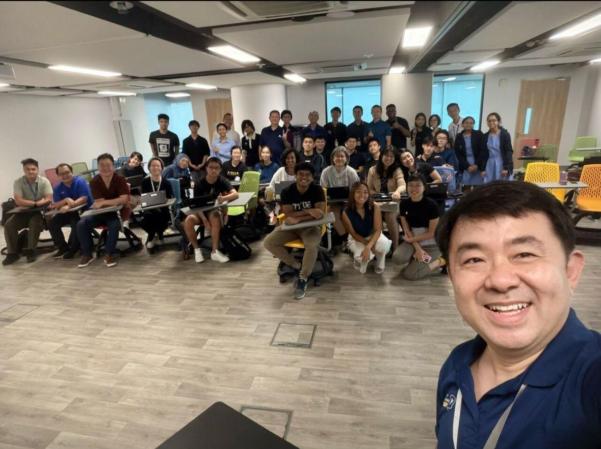
    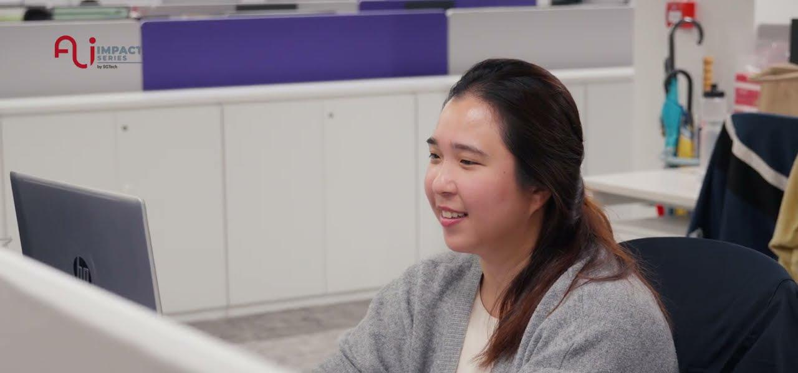
    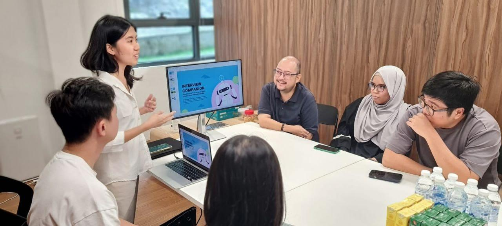
    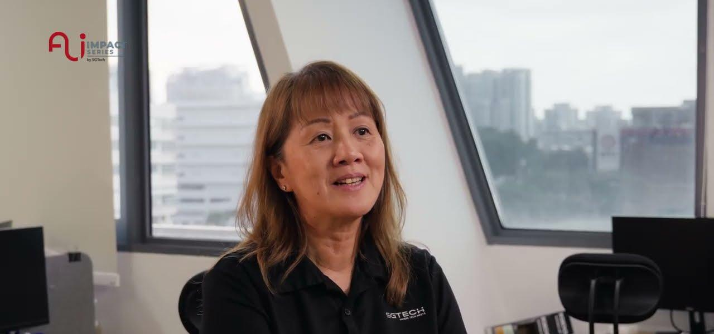
    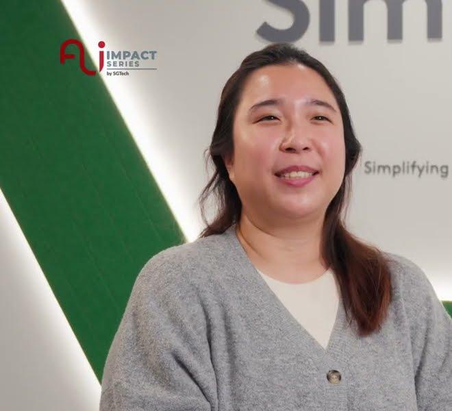
  </div>
  <div class="hero-shade" aria-hidden="true"></div>
  <canvas aria-hidden="true"></canvas>
  <p class="reel-cap" aria-hidden="true"><span class="cap-txt">Field photo · Eunoia Junior College</span></p>
  <div class="wrap hero-in">
    <div class="hero-copy">
      <p class="kicker"><span class="sq"></span>Expedition briefing · Singapore 2026 · Only for the brave</p>
      <h1 class="title" id="title">
        <span>Designing a</span>
        <span class="hot">Human-AI</span>
        <span class="edge-line"><span>Innovation <span class="hot">Edge</span></span></span>
        <span>for Enterprises</span>
      </h1>
      <p class="sub">Strategy Use Cases on Building “Trilingual Skills” (Design × AI × Domain) for the Future of Innovation</p>
      <p class="mono by">Developed by SUTD · Supported by SGTech and SkillsFuture Singapore (SSG)</p>
      <div class="ctas">
        <a class="btn btn--hot" href="https://www.sutd.edu.sg/wp-content/uploads/2026/04/Designing-A-Human-AI-Innovation-Edge-For-Enterprises-April-2026.pdf" target="_blank" rel="noopener"><strong class="ext">Read the report</strong><span class="mono">PDF · 98 pages · 40 MB</span></a>
        <a class="btn btn--line" href="#leaders"><strong>Watch the leaders' brief</strong><span class="mono">Executive summary · video</span></a>
      </div>
    </div>
    <nav class="itinerary" aria-label="The route">
      <p class="kicker"><span class="sq"></span>The route</p>
      <ol>
        <li><a href="#briefing"><span class="n">01</span><span class="t">The Briefing</span><span class="m">98 pages</span></a></li>
        <li><a href="#leaders"><span class="n">02</span><span class="t">The Leaders' Brief</span><span class="m">10 decisions</span></a></li>
        <li><a href="#impact-series"><span class="n">03</span><span class="t">AI Impact Series</span><span class="m">2 films</span></a></li>
        <li><a href="#languages"><span class="n">04</span><span class="t">Every Language</span><span class="m">16 editions</span></a></li>
        <li><a href="#edge"><span class="n">05</span><span class="t">The Edge</span><span class="m">4,000+ trained</span></a></li>
      </ol>
    </nav>
  </div>
</section>

<div class="ticker band s-ink" role="region" aria-label="Field reports inside the briefing">
  <div class="ticker-track">
    <ul>
      <li class="lbl">Field reports inside</li><li>KHL Printing</li><li>Vector Green</li><li>SimplyGo</li><li>SJ Group</li><li>Art Loft</li><li>Gardens by the Bay</li><li>NLB Oral History Centre</li><li>Eunoia Junior College</li><li>WSG × SUTD</li><li>The Forward Deployment Designer</li><li>Can AI replace leaders?</li><li>Forecasting fast vs slow</li><li>Citizens: all can innovate</li><li>Future of Cities</li>
    </ul>
    <ul aria-hidden="true">
      <li class="lbl">Field reports inside</li><li>KHL Printing</li><li>Vector Green</li><li>SimplyGo</li><li>SJ Group</li><li>Art Loft</li><li>Gardens by the Bay</li><li>NLB Oral History Centre</li><li>Eunoia Junior College</li><li>WSG × SUTD</li><li>The Forward Deployment Designer</li><li>Can AI replace leaders?</li><li>Forecasting fast vs slow</li><li>Citizens: all can innovate</li><li>Future of Cities</li>
    </ul>
  </div>
</div>

<!-- ===== stage 01 ===== -->
<section class="stage band s-stone" id="briefing" aria-labelledby="h-briefing">
  <div class="door band s-void" data-live>
    <div class="reel" data-interval="7000" aria-hidden="true">
      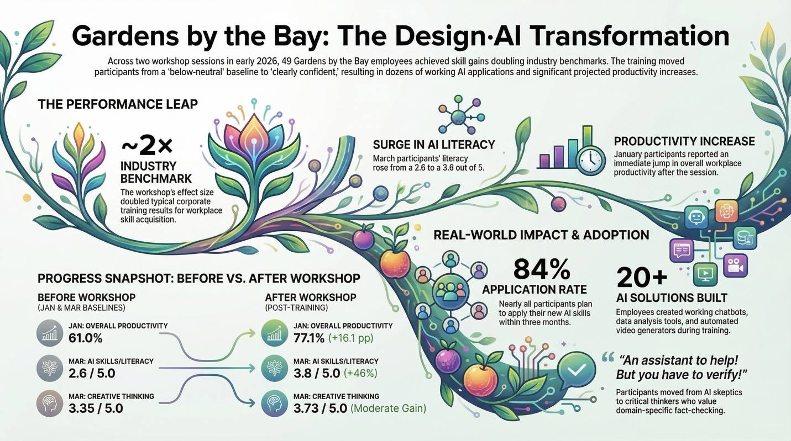
      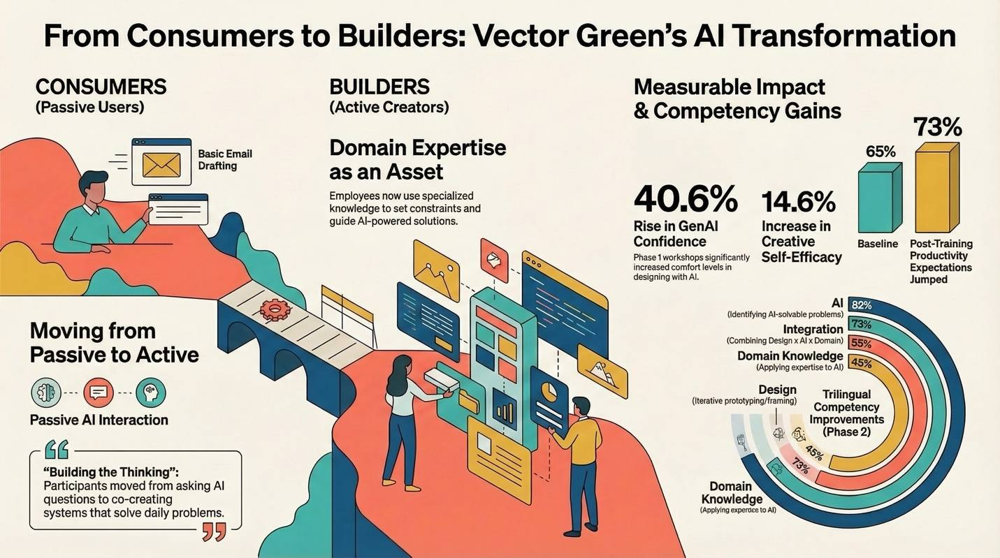
      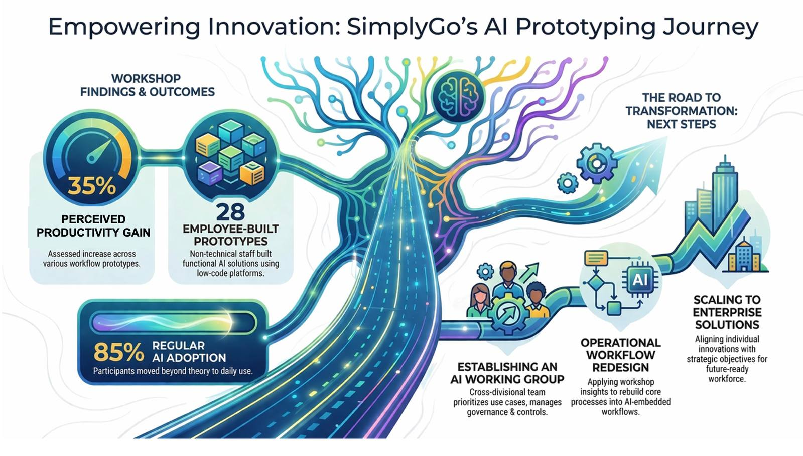
      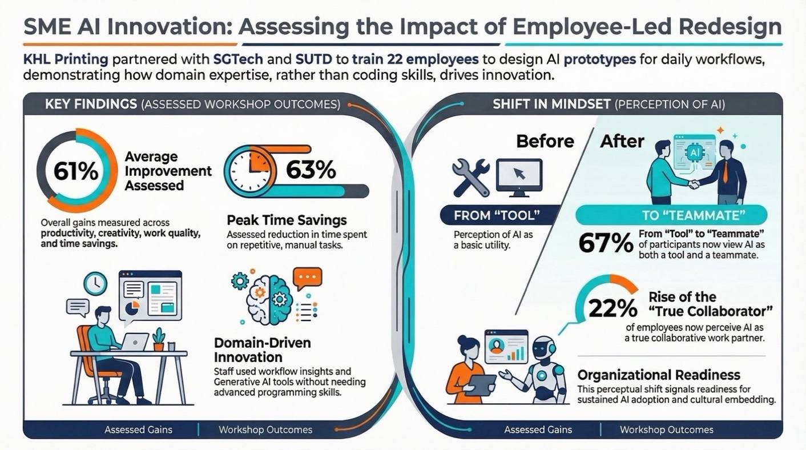
      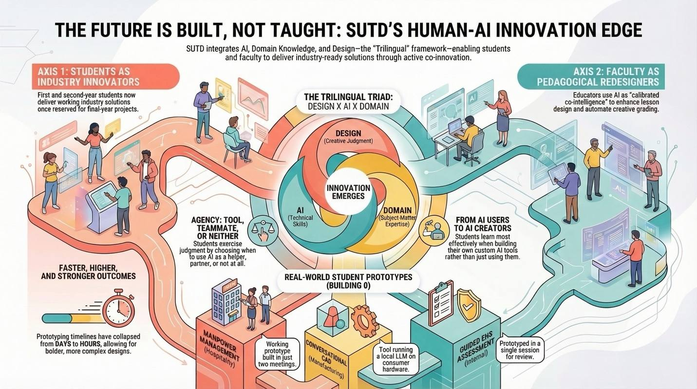
    </div>
    <p class="reel-cap" aria-hidden="true"><span class="cap-txt">From the report · Gardens by the Bay</span></p>
    <div class="wrap">
      <header class="stage-head">
        <div class="stage-copy">
          <p class="kicker"><span class="sq"></span>Stage 01 / 05 · The Briefing</p>
          <h2 class="h2" id="h-briefing">What AI can do <em>for</em> people. And what people can do <em>with</em> AI.</h2>
        </div>
        <span class="stage-no" aria-hidden="true">01</span>
      </header>
    </div>
  </div>
  <div class="wrap">
    <div class="brief">
      <figure style="margin:0">
        <a class="cover" href="https://www.sutd.edu.sg/wp-content/uploads/2026/04/Designing-A-Human-AI-Innovation-Edge-For-Enterprises-April-2026.pdf" target="_blank" rel="noopener" aria-label="Open the report PDF">
          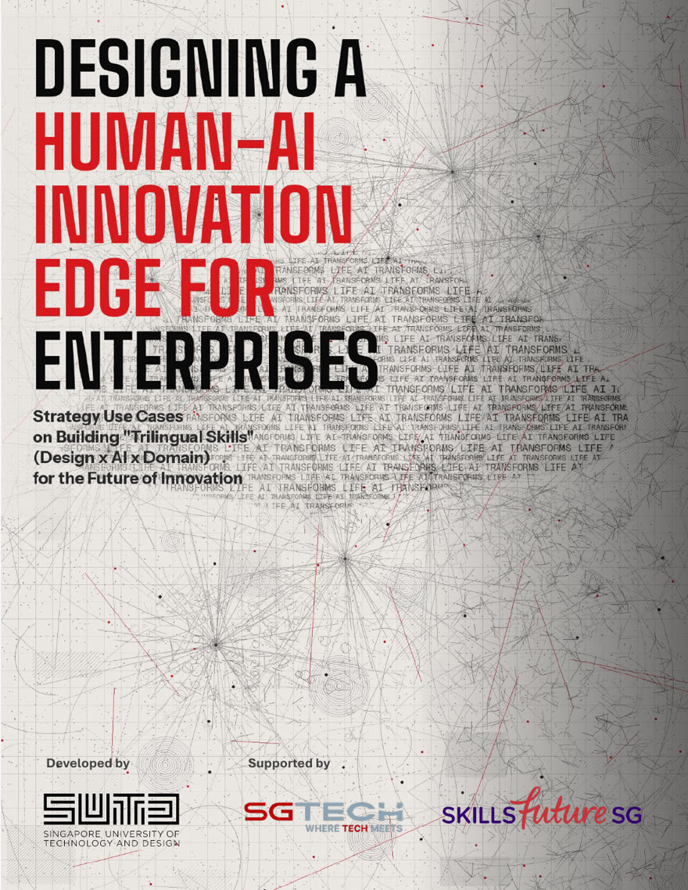
        </a>
        <figcaption class="mono">Cover · April 2026 · Tap to open the PDF</figcaption>
      </figure>
      <div class="brief-copy">
        <p class="lead">Most talk about AI is about what it can do, and what it can do to people. This briefing turns that around. It gathers strategy use cases from Singapore's SMEs, multinationals, schools, public agencies and citizens, and distils them into ten decisions leaders can make to put humans at the heart of the age of AI.</p>
        <dl class="facts">
          <div><dt class="mono">Published</dt><dd>Apr 2026</dd></div>
          <div><dt class="mono">Pages</dt><dd>98</dd></div>
          <div><dt class="mono">Chapters</dt><dd>17</dd></div>
          <div><dt class="mono">Decisions</dt><dd>10</dd></div>
        </dl>
        <div class="find">
          <p class="kicker"><span class="sq"></span>Find it in three places</p>
          <ul>
            <li><a href="https://www.sutd.edu.sg/wp-content/uploads/2026/04/Designing-A-Human-AI-Innovation-Edge-For-Enterprises-April-2026.pdf" target="_blank" rel="noopener"><span class="ft">The full report (PDF)</span><span class="fh mono">sutd.edu.sg · 40 MB download</span><span class="fa" aria-hidden="true">↗</span></a></li>
            <li><a href="https://jobsandskills.swda.gov.sg/insights/sfjsi/sfjsi-may-2026" target="_blank" rel="noopener"><span class="ft">Jobs &amp; Skills Insights · May 2026</span><span class="fh mono">jobsandskills.swda.gov.sg</span><span class="fa" aria-hidden="true">↗</span></a></li>
            <li><a href="https://www.sutd.edu.sg/future-of-innovation/strategy-use-cases-for-enterprises/" target="_blank" rel="noopener"><span class="ft">Strategy use cases for enterprises</span><span class="fh mono">sutd.edu.sg · Future of Innovation</span><span class="fa" aria-hidden="true">↗</span></a></li>
          </ul>
        </div>
      </div>
    </div>
  </div>
</section>

<!-- ===== stage 02 ===== -->
<section class="stage band s-graphite" id="leaders" aria-labelledby="h-leaders">
  <div class="door band s-void" data-live>
    <div class="reel" data-interval="6500" aria-hidden="true">
      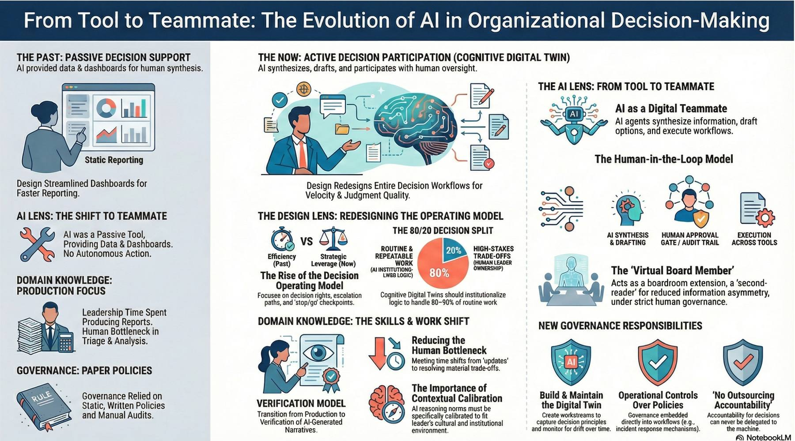
      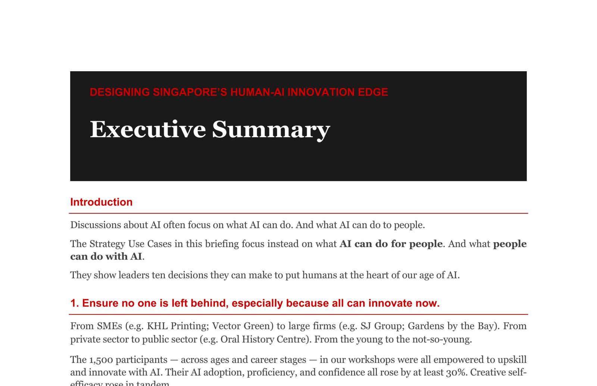
      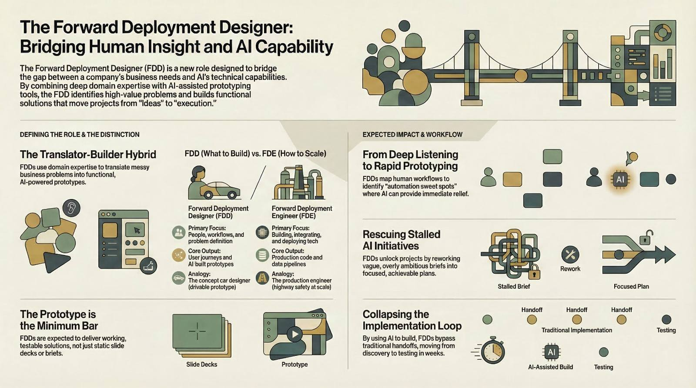
    </div>
    <p class="reel-cap" aria-hidden="true"><span class="cap-txt">From the report · From tool to teammate in decision-making</span></p>
    <div class="wrap">
      <header class="stage-head">
        <div class="stage-copy">
          <p class="kicker"><span class="sq"></span>Stage 02 / 05 · The Leaders' Brief</p>
          <h2 class="h2" id="h-leaders">Ten decisions to put <em>humans</em> at the heart of the age of AI.</h2>
        </div>
        <span class="stage-no" aria-hidden="true">02</span>
      </header>
    </div>
  </div>
  <div class="wrap">
    <div class="brief-film">
      <a class="film" href="https://www.youtube.com/watch?v=JOoViusvzz8" target="_blank" rel="noopener" aria-label="Watch the executive summary video on YouTube">
        <span class="frame">
          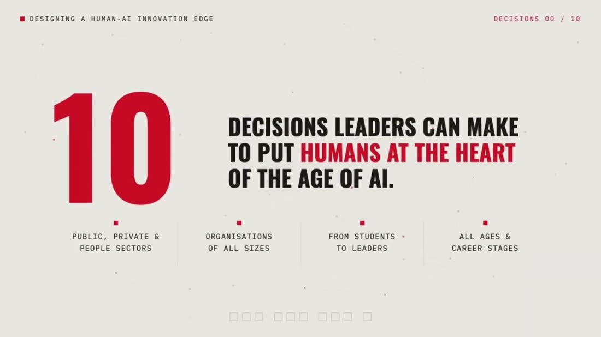
          <span class="corners" aria-hidden="true"></span>
          <span class="play" aria-hidden="true">Play on YouTube</span>
        </span>
      </a>
      <div class="side">
        <p class="kicker"><span class="sq"></span>Executive summary · C-suite cut</p>
        <h3 class="h3">The whole report, in one sitting.</h3>
        <p class="muted">A video summary of the executive summary for leaders: the ten decisions, and the evidence behind each one.</p>
        <a class="ext" href="https://www.youtube.com/watch?v=JOoViusvzz8" target="_blank" rel="noopener">Watch on YouTube</a>
      </div>
    </div>
    <div class="dec-head">
      <p class="kicker"><span class="sq"></span>The ten decisions · from the Executive Summary</p>
      <p class="kicker">Each with a case from the field</p>
    </div>
    <ol class="decisions">
      <li><span class="d-n">01</span><div><p class="d-t">Ensure no one is left behind, especially because all can innovate now.</p><p class="d-p"><b>1,500 workshop participants</b>AI adoption, proficiency and confidence all rose by at least 30%.</p></div></li>
      <li><span class="d-n">02</span><div><p class="d-t">First let them learn to build. Then build to learn.</p><p class="d-p"><b>Vector Green</b>A 41% gain in AI confidence once employees saw they could build solutions to everyday problems.</p></div></li>
      <li><span class="d-n">03</span><div><p class="d-t">Know when to work with AI, and when not to. (AI as Tool, Teammate, and/or Neither.)</p><p class="d-p"><b>KHL Printing</b>67% of employees came to see AI as both Tool and Teammate, up from 56%.</p></div></li>
      <li><span class="d-n">04</span><div><p class="d-t">Trust the people closest to the work to innovate.</p><p class="d-p"><b>SimplyGo</b>Employee-built prototypes, from compliance monitoring to expense tracking, now governed by a formal AI Working Group.</p></div></li>
      <li><span class="d-n">05</span><div><p class="d-t">Deepen domain expertise, because it multiplies Design·AI's power (and vice versa).</p><p class="d-p"><b>Art Loft</b>The founder-educator has since designed six new AI-enhanced activities.</p></div></li>
      <li><span class="d-n">06</span><div><p class="d-t">Scale confidence to act, because scaling skills without confidence stalls.</p><p class="d-p"><b>WSG × SUTD</b>98% of workers aged 50 and above said AI was important for career exploration and transition.</p></div></li>
      <li><span class="d-n">07</span><div><p class="d-t">Start small, then build better, bigger, and bolder.</p><p class="d-p"><b>SJ Group</b>Its AI capability started as a team of four.</p></div></li>
      <li><span class="d-n">08</span><div><p class="d-t">Redesign the work so that humans do what humans do best, and let AI do the rest.</p><p class="d-p"><b>Co-forecasting</b>AI's speed plus human insight compresses forecasting cycles from months into weeks.</p></div></li>
      <li><span class="d-n">09</span><div><p class="d-t">Create new tasks, new roles, and new value.</p><p class="d-p"><b>Forward Deployment Designer</b>A stalled project went from stuck to beta testing in three months.</p></div></li>
      <li><span class="d-n">10</span><div><p class="d-t">Invest in community, because it's not just about “me”; it's also about “we.”</p><p class="d-p"><b>SSG × SGTech × SUTD</b>No single organisation could have produced these results alone.</p></div></li>
    </ol>
    <div class="infield">
      <p class="kicker"><span class="sq"></span>The decisions, in the field · photos from the report</p>
      <div class="infield-row">
        <figure class="field">
          <span class="photo">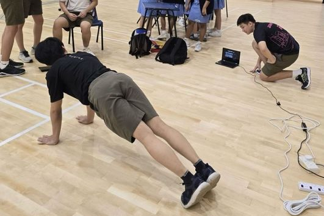</span>
          <figcaption><b class="mono">Decision 02 · Eunoia Junior College</b><span>On Learning Day, students built working apps in a day, including a push-up counter that uses AI vision.</span></figcaption>
        </figure>
        <figure class="field">
          <span class="photo">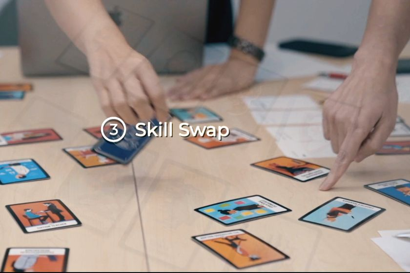</span>
          <figcaption><b class="mono">Decision 06 · WSG × SUTD</b><span>Skill Swap, a role-play game in the What's Next workshops for workers aged 50 and above.</span></figcaption>
        </figure>
        <figure class="field">
          <span class="photo">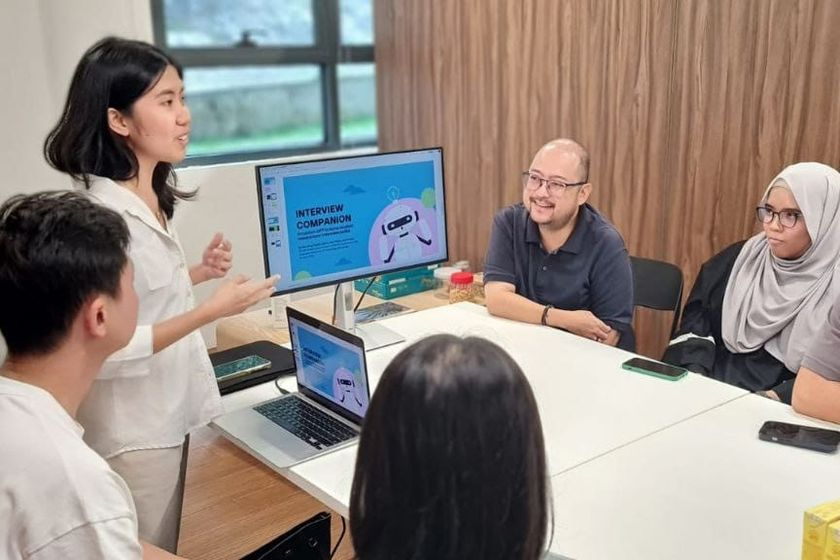</span>
          <figcaption><b class="mono">Decision 07 · NLB Oral History Centre</b><span>Students demonstrate Interview Companion to the Oral History Centre. A student project became a national tool.</span></figcaption>
        </figure>
        <figure class="field">
          <span class="photo">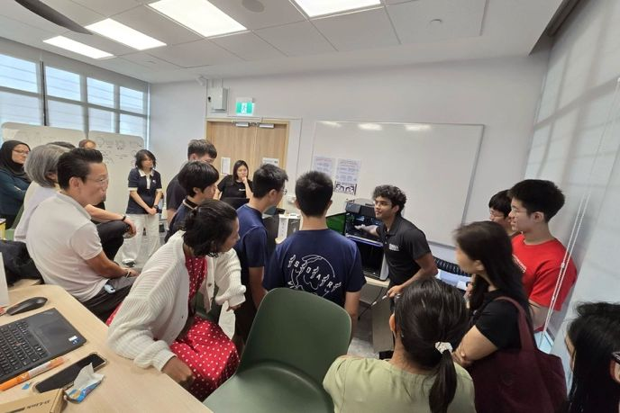</span>
          <figcaption><b class="mono">Decision 10 · Eunoia Junior College</b><span>Teachers and students learned AI side by side, as peers.</span></figcaption>
        </figure>
      </div>
    </div>
  </div>
</section>

<!-- ===== stage 03 ===== -->
<section class="stage band s-coal" id="impact-series" aria-labelledby="h-series">
  <div class="door door--strip band s-void" data-live>
    <div class="strip" aria-hidden="true">
      <div class="strip-track anim">
        <div class="strip-set">
          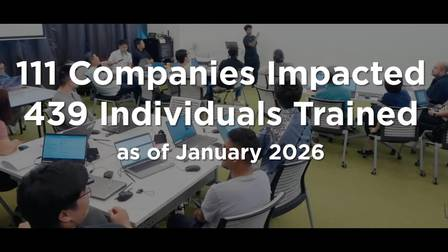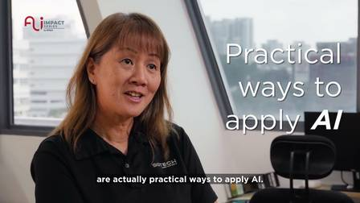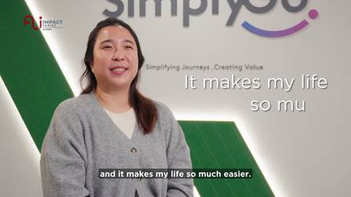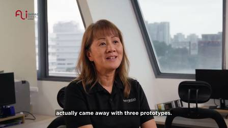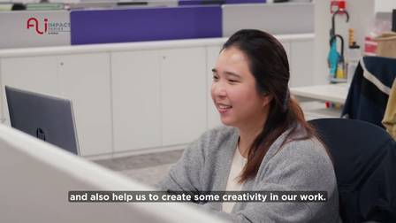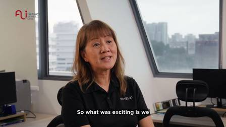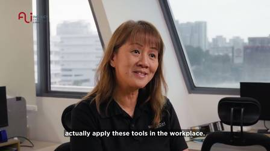
        </div>
        <div class="strip-set">
          
        </div>
      </div>
    </div>
    <div class="wrap">
      <header class="stage-head">
        <div class="stage-copy">
          <p class="kicker"><span class="sq"></span>Stage 03 / 05 · AI Impact Series</p>
          <h2 class="h2" id="h-series">Real enterprise stories of AI adoption and <em>transformation.</em></h2>
        </div>
        <span class="stage-no" aria-hidden="true">03</span>
      </header>
    </div>
  </div>
  <div class="wrap">
    <p class="lead muted">The AI Impact Series is one of the programmes behind the report's use cases. SGTech conceptualised it, and it is now delivered in collaboration with SUTD. Two films tell its story. Start with the short one, then go long.</p>
    <div class="films">
      <div class="film-wrap">
        <a class="film" href="https://www.youtube.com/watch?v=1Q8ZB3im5NQ" target="_blank" rel="noopener" aria-label="Watch the short AI Impact Series film on YouTube">
          <span class="frame">
            
            <span class="corners" aria-hidden="true"></span>
            <span class="play" aria-hidden="true">Play on YouTube</span>
          </span>
          <span class="film-meta"><span class="kicker">Film A · Short</span><span class="kicker">YouTube</span></span>
          <h3>The short cut</h3>
          <p class="note">The AI Impact Series, in brief. Start here.</p>
        </a>
      </div>
      <div class="film-wrap">
        <a class="film" href="https://www.youtube.com/watch?v=TwpBCAL7cUE" target="_blank" rel="noopener" aria-label="Watch the long AI Impact Series film on SGTech's YouTube channel">
          <span class="frame">
            
            <span class="corners" aria-hidden="true"></span>
            <span class="play" aria-hidden="true">Play on YouTube</span>
          </span>
          <span class="film-meta"><span class="kicker">Film B · Long</span><span class="kicker">SGTech on YouTube</span></span>
          <h3>The full story</h3>
          <p class="note">Enterprises tell the story of their AI adoption in their own words.</p>
        </a>
        <a class="alt ext" href="https://www.youtube.com/watch?v=TGDkQyVnJhY" target="_blank" rel="noopener">Film B is also on YouTube here</a>
      </div>
    </div>
    <div class="voices">
      <p class="kicker"><span class="sq"></span>Voices from the films</p>
      <div class="voice-row">
        <figure class="voice">
          <span class="photo">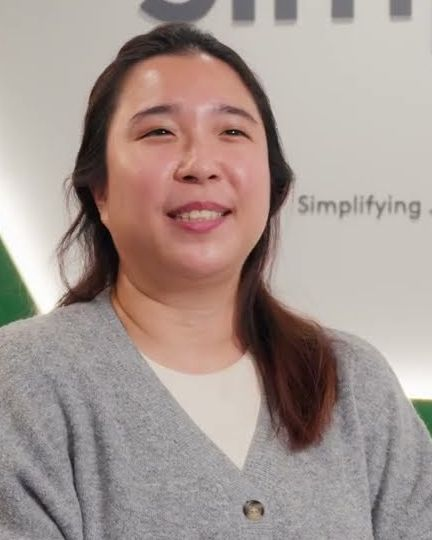</span>
          <blockquote><p>“…and it makes my life so much easier.”</p></blockquote>
          <figcaption class="mono">SimplyGo · Film A, short</figcaption>
        </figure>
        <figure class="voice">
          <span class="photo">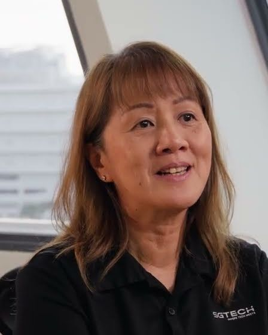</span>
          <blockquote><p>“…actually came away with three prototypes.”</p></blockquote>
          <figcaption class="mono">SGTech · Film B, long</figcaption>
        </figure>
        <figure class="voice">
          <span class="photo">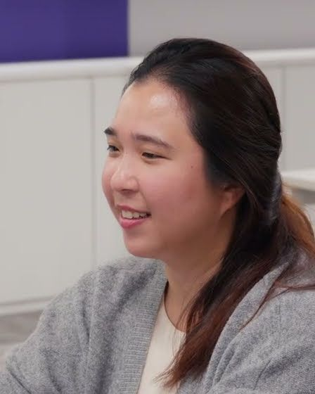</span>
          <blockquote><p>“…and also help us to create some creativity in our work.”</p></blockquote>
          <figcaption class="mono">Film B, long</figcaption>
        </figure>
      </div>
    </div>
    <div class="series-foot">
      <p class="muted">Programme details, dates and sign-ups are on SGTech's site.</p>
      <a class="link-hot ext" href="https://www.sgtech.org.sg/pageManagement/aiimpactseries" target="_blank" rel="noopener">AI Impact Series at SGTech</a>
    </div>
  </div>
</section>

<!-- ===== stage 04 ===== -->
<section class="stage band s-void" id="languages" aria-labelledby="h-lang">
  <div class="door band s-void" data-live>
    <div class="screens" aria-hidden="true">
      <div class="screens-plane">
        <div class="col anim">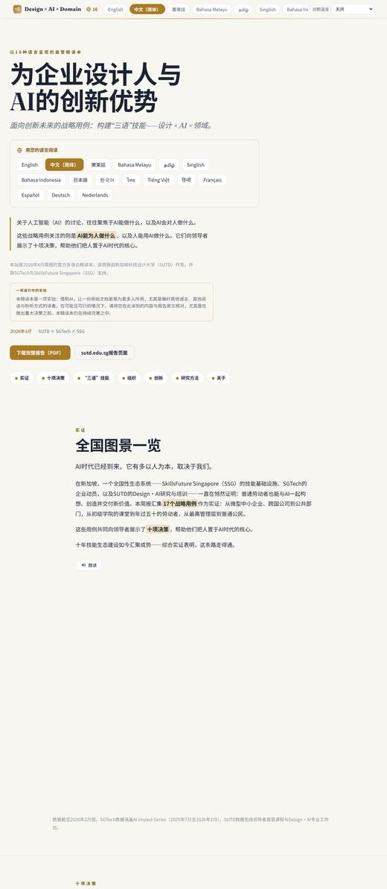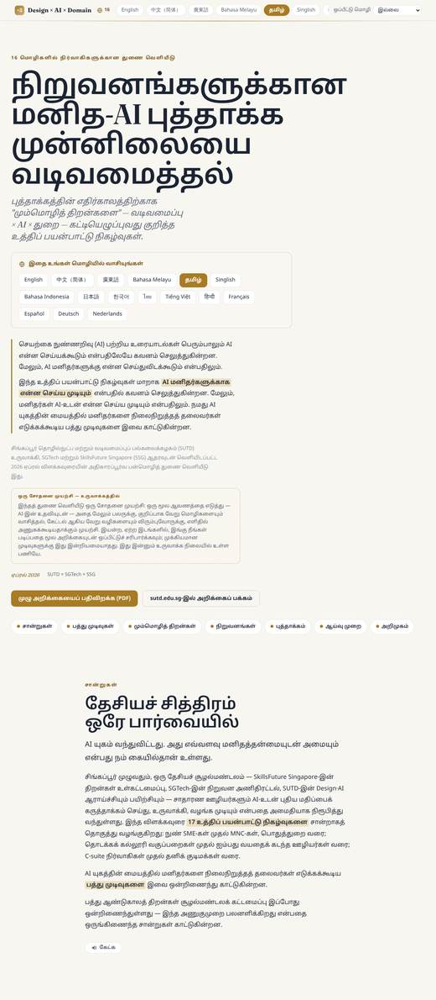</div>
        <div class="col down anim">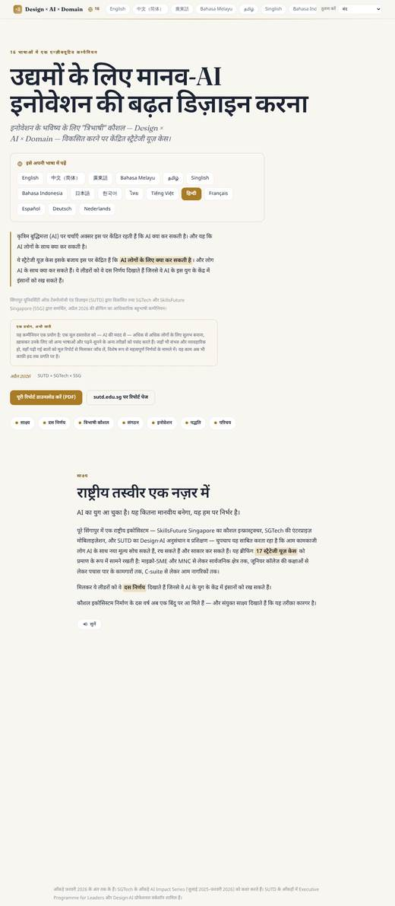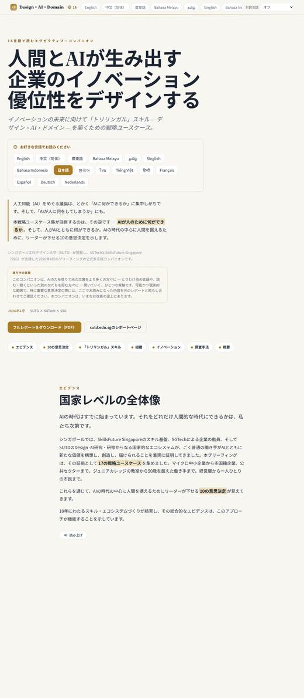</div>
        <div class="col anim">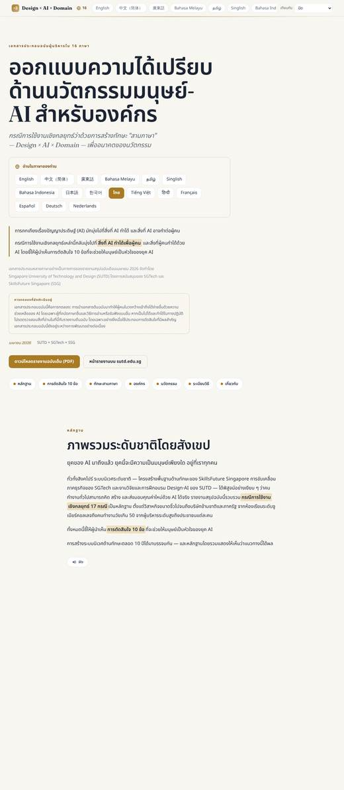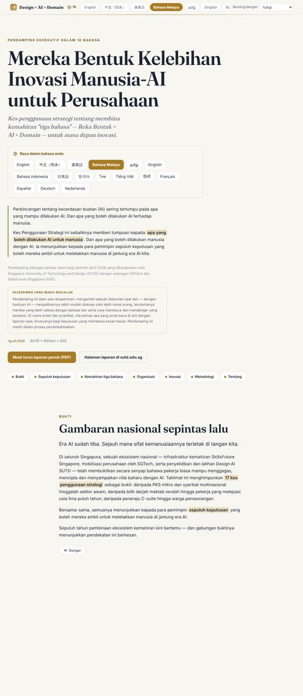</div>
        <div class="col down anim"></div>
      </div>
    </div>
    <p class="reel-cap" aria-hidden="true"><span class="cap-txt">The companion in 中文 · தமிழ் · हिन्दी · 日本語 · ไทย · Melayu</span></p>
    <div class="wrap">
      <header class="stage-head">
        <div class="stage-copy">
          <p class="kicker"><span class="sq"></span>Stage 04 / 05 · Every Language</p>
          <h2 class="h2" id="h-lang">One report. <em>Sixteen</em> languages.</h2>
        </div>
        <span class="stage-no" aria-hidden="true">04</span>
      </header>
    </div>
  </div>
  <div class="wrap">
    <div class="lang">
      <div class="lang-main">
        <p class="lead muted">A prototype companion site carries the report's ideas to readers in the language they think in, from 中文 and Bahasa Melayu to தமிழ் and Singlish. It is an experiment in accessibility. For consequential decisions, check the original report.</p>
        <div class="chips" role="list" aria-label="Open the companion in a language">
          <a role="listitem" href="https://kr48vr.github.io/Designing-Human-AI-Innovation-Edge-For-Enterprises/companion/#lang=en" target="_blank" rel="noopener" lang="en"><span class="nat">English</span><span class="eng">The source</span></a>
          <a role="listitem" href="https://kr48vr.github.io/Designing-Human-AI-Innovation-Edge-For-Enterprises/companion/#lang=zh" target="_blank" rel="noopener" lang="zh-Hans"><span class="nat">中文（简体）</span><span class="eng" lang="en">Chinese</span></a>
          <a role="listitem" href="https://kr48vr.github.io/Designing-Human-AI-Innovation-Edge-For-Enterprises/companion/#lang=yue" target="_blank" rel="noopener" lang="yue"><span class="nat">廣東話</span><span class="eng" lang="en">Cantonese</span></a>
          <a role="listitem" href="https://kr48vr.github.io/Designing-Human-AI-Innovation-Edge-For-Enterprises/companion/#lang=ms" target="_blank" rel="noopener" lang="ms"><span class="nat">Bahasa Melayu</span><span class="eng" lang="en">Malay</span></a>
          <a role="listitem" href="https://kr48vr.github.io/Designing-Human-AI-Innovation-Edge-For-Enterprises/companion/#lang=ta" target="_blank" rel="noopener" lang="ta"><span class="nat">தமிழ்</span><span class="eng" lang="en">Tamil</span></a>
          <a role="listitem" href="https://kr48vr.github.io/Designing-Human-AI-Innovation-Edge-For-Enterprises/companion/#lang=sg" target="_blank" rel="noopener" lang="en-SG"><span class="nat">Singlish</span><span class="eng">Singapore English</span></a>
          <a role="listitem" href="https://kr48vr.github.io/Designing-Human-AI-Innovation-Edge-For-Enterprises/companion/#lang=id" target="_blank" rel="noopener" lang="id"><span class="nat">Bahasa Indonesia</span><span class="eng" lang="en">Indonesian</span></a>
          <a role="listitem" href="https://kr48vr.github.io/Designing-Human-AI-Innovation-Edge-For-Enterprises/companion/#lang=ja" target="_blank" rel="noopener" lang="ja"><span class="nat">日本語</span><span class="eng" lang="en">Japanese</span></a>
          <a role="listitem" href="https://kr48vr.github.io/Designing-Human-AI-Innovation-Edge-For-Enterprises/companion/#lang=ko" target="_blank" rel="noopener" lang="ko"><span class="nat">한국어</span><span class="eng" lang="en">Korean</span></a>
          <a role="listitem" href="https://kr48vr.github.io/Designing-Human-AI-Innovation-Edge-For-Enterprises/companion/#lang=th" target="_blank" rel="noopener" lang="th"><span class="nat">ไทย</span><span class="eng" lang="en">Thai</span></a>
          <a role="listitem" href="https://kr48vr.github.io/Designing-Human-AI-Innovation-Edge-For-Enterprises/companion/#lang=vi" target="_blank" rel="noopener" lang="vi"><span class="nat">Tiếng Việt</span><span class="eng" lang="en">Vietnamese</span></a>
          <a role="listitem" href="https://kr48vr.github.io/Designing-Human-AI-Innovation-Edge-For-Enterprises/companion/#lang=hi" target="_blank" rel="noopener" lang="hi"><span class="nat">हिन्दी</span><span class="eng" lang="en">Hindi</span></a>
          <a role="listitem" href="https://kr48vr.github.io/Designing-Human-AI-Innovation-Edge-For-Enterprises/companion/#lang=fr" target="_blank" rel="noopener" lang="fr"><span class="nat">Français</span><span class="eng" lang="en">French</span></a>
          <a role="listitem" href="https://kr48vr.github.io/Designing-Human-AI-Innovation-Edge-For-Enterprises/companion/#lang=es" target="_blank" rel="noopener" lang="es"><span class="nat">Español</span><span class="eng" lang="en">Spanish</span></a>
          <a role="listitem" href="https://kr48vr.github.io/Designing-Human-AI-Innovation-Edge-For-Enterprises/companion/#lang=de" target="_blank" rel="noopener" lang="de"><span class="nat">Deutsch</span><span class="eng" lang="en">German</span></a>
          <a role="listitem" href="https://kr48vr.github.io/Designing-Human-AI-Innovation-Edge-For-Enterprises/companion/#lang=nl" target="_blank" rel="noopener" lang="nl"><span class="nat">Nederlands</span><span class="eng" lang="en">Dutch</span></a>
        </div>
        <a class="btn-dark ext" href="https://kr48vr.github.io/Designing-Human-AI-Innovation-Edge-For-Enterprises/companion/#lang=en" target="_blank" rel="noopener">Open the companion</a>
      </div>
      <a class="classified" href="https://claude.ai/artifact/1iTurAHRDL1HU4ErbvAaTY" target="_blank" rel="noopener">
        <span class="stamp">Invite-only</span>
        <p class="kicker"><span class="sq"></span>Restricted file · Behind the build</p>
        <h3 class="h3">How we built it</h3>
        <p>The making of the multilingual companion: the full quality-check log, and the human-AI collaboration behind it, read through the report's own lens of AI as Tool, Teammate, and/or Neither.</p>
        <span class="redact" aria-hidden="true"><i></i><i></i><i></i><i></i></span>
        <span class="go ext">Open the file · access by invitation</span>
      </a>
    </div>
  </div>
</section>

<!-- ===== stage 05 ===== -->
<section class="stage" id="edge" aria-labelledby="h-edge">
  <div class="band s-red edge-top" data-live>
    <div class="wrap" style="display:grid;gap:clamp(40px,5vw,64px)">
      <header class="stage-head">
        <div class="stage-copy">
          <p class="kicker"><span class="sq"></span>Stage 05 / 05 · The Edge</p>
          <h2 class="h2" id="h-edge">What it led to.</h2>
        </div>
        <span class="stage-no" aria-hidden="true">05</span>
      </header>
      <div class="numbers">
        <div class="growth">
          <p class="lead">The Executive Programmes for leaders in Strategic Design·AI and the AI Impact Series kept growing after the report was published.</p>
          <div class="g-row">
            <div class="g-label"><span class="mono">At publication · April 2026</span><span class="g-num">1,500</span></div>
            <div class="g-track" aria-hidden="true"><i style="width:37.5%"></i></div>
          </div>
          <div class="g-row">
            <div class="g-label"><span class="mono">Updated 4Q 2026</span><span class="g-num">4,000+</span></div>
            <div class="g-track" aria-hidden="true"><i style="width:100%"></i></div>
          </div>
          <p class="g-note">Leaders and professionals trained. The April 2026 figure is the workshop participants cited in the report. Bars are drawn to scale.</p>
        </div>
        <div class="pct">
          <span class="mono" style="color:var(--bone)">Updated 4Q 2026</span>
          <span class="big">92%</span>
          <p>recommendation rate from the leaders and professionals trained.</p>
        </div>
      </div>
      <div class="faces">
        <div class="faces-row" aria-hidden="true">
          <span></span>
          <span></span>
          <span></span>
          <span></span>
          <span></span>
          <span></span>
          <span></span>
          <span></span>
        </div>
        <p class="mono">Faces from the field · the report's case studies and the AI Impact Series films</p>
      </div>
    </div>
  </div>

  <div class="band s-void colab" data-live>
    <div class="wrap">
      <p class="led">And it opened a new door</p>
      <div class="colab-head">
        <div class="left">
          <h3 class="name">SUTD CoLab <em>@ LLI</em></h3>
          <p class="kicker"><span class="sq"></span>Opened 26 October 2026 · Lifelong Learning Institute</p>
          <p class="lead muted">An innovation lab where organisations learn, build and deploy AI-assisted solutions for real workplace challenges. From concept to working prototype in 3 days.</p>
          <a class="link-hot ext" href="https://www.sutd.edu.sg/admissions/academy/sutd-colab-lli/" target="_blank" rel="noopener">Visit SUTD CoLab @ LLI</a>
        </div>
        <figure class="colab-screen" aria-hidden="true">
          <div class="colab-plane">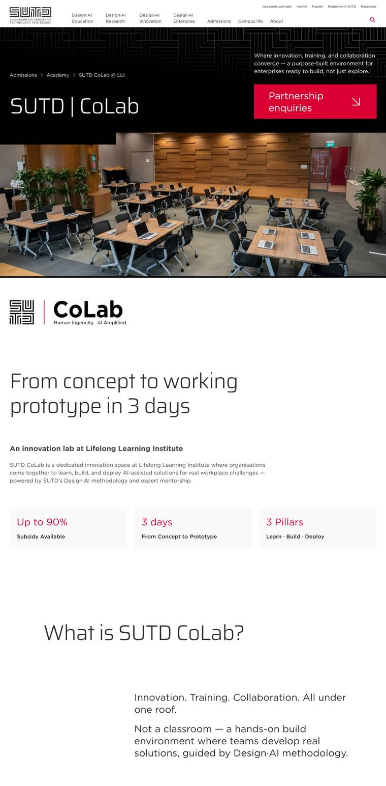</div>
          <figcaption class="mono">As seen on sutd.edu.sg</figcaption>
        </figure>
      </div>
      <ol class="steps">
        <li><span class="sn">STEP 1</span><span class="st">Learn</span><p>Participants learn to apply AI to the real challenges in their own work.</p></li>
        <li><span class="sn">STEP 2</span><span class="st">Build</span><p>They combine AI with their own domain expertise to build working solutions.</p></li>
        <li><span class="sn">STEP 3</span><span class="st">Deploy</span><p>For promising prototypes, partners AvePoint and MaivenPoint help bring them into existing systems and daily operations.</p></li>
      </ol>
      <div class="figs">
        <div class="figs-row">
          <div class="fig"><span class="mono">So far</span><span class="v">155</span><p>professionals have taken part since the pilot began on 9 September 2026.</p></div>
          <div class="fig"><span class="mono">Year one goal</span><span class="v">2,000</span><p>working professionals trained, and more than 100 enterprises helped to solve work problems with AI.</p></div>
          <div class="fig"><span class="mono">Long-term goal</span><span class="v">5,000<small>/ yr</small></span><p>people trained every year, with about 300 enterprises helped to adopt AI.</p></div>
        </div>
        <p class="mono src">Figures as reported by Lianhe Zaobao, 26 October 2026</p>
      </div>
      <figure class="quote">
        <span class="qm" aria-hidden="true">“</span>
        <div>
          <blockquote><p>Our goal is not to make every company an AI company, but to help every company become a better company with AI.</p></blockquote>
          <figcaption><b>Tan Kiat How</b>, Senior Minister of State for Digital Development and Information, and Health, at the opening of SUTD CoLab. Translated from Lianhe Zaobao's report in Chinese.
            <span class="orig" lang="zh-Hans">“我们的目标不是让每一家企业都成为人工智能公司，而是让每一家企业都能借助人工智能，成为更好的公司。”</span>
          </figcaption>
        </div>
      </figure>
      <div class="press">
        <p class="kicker"><span class="sq"></span>In the news</p>
        <div class="clips">
          <a class="clip" href="https://www.zaobao.com.sg/news/singapore/story20261026-9898241" target="_blank" rel="noopener">
            <span class="clip-top"><span class="clip-mast" lang="zh-Hans">联合早报</span><span class="mono">Lianhe Zaobao · 26 Oct 2026</span></span>
            <h4 lang="zh-Hans">新科大设共创实验室 首年拟培训2000人应用AI</h4>
            <p class="en">SUTD sets up CoLab, aiming to train 2,000 people to apply AI in its first year.</p>
            <span class="go ext">Read the article · in Chinese</span>
          </a>
          <a class="clip" href="https://www.tamilmurasu.com.sg/community/sutd-co-lab-will-pave-way-solutions-ai-education" target="_blank" rel="noopener">
            <span class="clip-top"><span class="clip-mast" lang="ta">தமிழ் முரசு</span><span class="mono">Tamil Murasu · 29 Oct 2026</span></span>
            <h4 lang="ta">எஸ்யுடிடி கோலேப்: AI மூலம் தீர்வுகளை உருவாக்குதல்</h4>
            <p class="en">SUTD CoLab: building solutions with AI. A new learning centre that helps people solve real-life challenges with AI.</p>
            <span class="go ext">Read the article · in Tamil</span>
          </a>
        </div>
      </div>
    </div>
  </div>
</section>
</main>

<footer class="foot band s-ink">
  <div class="wrap">
    <p class="foot-line">The age of AI is here. How human it becomes is <em>up to us.</em></p>
    <div class="foot-meta">
      <span class="mono">Designing a Human-AI Innovation Edge for Enterprises · April 2026</span>
      <span class="mono">Developed by SUTD · Supported by SGTech and SkillsFuture Singapore (SSG)</span>
      <a class="mono" href="#top">Back to base camp ↑</a>
    </div>
  </div>
</footer>

<script>
(function(){
  var reduce = window.matchMedia && matchMedia('(prefers-reduced-motion: reduce)').matches;

  /* ---- reels: crossfade between frames while their section is on screen ---- */
  function Reel(el){
    this.imgs = Array.prototype.slice.call(el.querySelectorAll('img'));
    this.i = 0; this.t = 0;
    this.ms = +el.getAttribute('data-interval') || 6500;
    var cap = el.parentNode.querySelector(':scope > .reel-cap .cap-txt');
    this.cap = cap;
  }
  Reel.prototype.step = function(){
    var a = this.imgs[this.i];
    this.i = (this.i + 1) % this.imgs.length;
    var b = this.imgs[this.i];
    b.classList.add('is-on'); a.classList.remove('is-on');
    if (this.cap && b.getAttribute('data-cap')) this.cap.textContent = b.getAttribute('data-cap');
  };
  Reel.prototype.play = function(){ if (this.t || reduce || this.imgs.length < 2) return; var s = this; this.t = setInterval(function(){ s.step(); }, this.ms); };
  Reel.prototype.stop = function(){ clearInterval(this.t); this.t = 0; };

  var live = Array.prototype.slice.call(document.querySelectorAll('[data-live]'));
  live.forEach(function(el){ el._reels = Array.prototype.slice.call(el.querySelectorAll(':scope > .reel')).map(function(r){ return new Reel(r); }); });
  function setLive(el, on){
    el.classList.toggle('is-live', on);
    el._reels.forEach(function(r){ on ? r.play() : r.stop(); });
  }
  if ('IntersectionObserver' in window) {
    var io = new IntersectionObserver(function(es){ es.forEach(function(e){ setLive(e.target, e.isIntersecting && !document.hidden); }); }, { rootMargin: '80px 0px' });
    live.forEach(function(el){ io.observe(el); });
    document.addEventListener('visibilitychange', function(){
      live.forEach(function(el){
        var r = el.getBoundingClientRect();
        setLive(el, !document.hidden && r.bottom > 0 && r.top < innerHeight);
      });
    });
  } else {
    live.forEach(function(el){ setLive(el, true); });
  }

  /* ---- hero network: drifting nodes over the people, links to the pointer ---- */
  var hero = document.querySelector('.hero');
  var cv = hero && hero.querySelector('canvas');
  if (cv && cv.getContext) {
    var ctx = cv.getContext('2d');
    var css = getComputedStyle(document.documentElement);
    var LINE = css.getPropertyValue('--bone').trim() || '#F2F0EC';
    var RED = css.getPropertyValue('--signal-hi').trim() || '#FF4D5A';
    var W = 0, H = 0, dpr = 1, nodes = [], rays = [], ptr = null, visible = true, raf = 0;
    function rnd(a, b){ return a + Math.random() * (b - a); }
    function seed(){
      var n = Math.round(Math.max(36, Math.min(120, W * H / 10000)));
      nodes = [];
      for (var i = 0; i < n; i++) {
        nodes.push({ x: W * (1 - 0.96 * Math.pow(Math.random(), 1.3)), y: rnd(0, H), vx: rnd(-.2, .2), vy: rnd(-.2, .2), red: Math.random() < .12 });
      }
      rays = [];
      for (var j = 0; j < 8; j++) rays.push({ x1: rnd(W * .3, W), y1: rnd(-20, H * .3), x2: rnd(W * .2, W * 1.1), y2: rnd(H * .7, H + 20), red: j < 2 });
    }
    function size(){
      var r = hero.getBoundingClientRect();
      dpr = Math.min(window.devicePixelRatio || 1, 2);
      W = Math.max(1, Math.round(r.width)); H = Math.max(1, Math.round(r.height));
      cv.width = W * dpr; cv.height = H * dpr;
      ctx.setTransform(dpr, 0, 0, dpr, 0, 0);
      seed(); draw();
    }
    function draw(){
      ctx.clearRect(0, 0, W, H);
      ctx.lineWidth = .7;
      for (var k = 0; k < rays.length; k++) {
        var ry = rays[k];
        ctx.globalAlpha = ry.red ? .5 : .12;
        ctx.strokeStyle = ry.red ? RED : LINE;
        ctx.beginPath(); ctx.moveTo(ry.x1, ry.y1); ctx.lineTo(ry.x2, ry.y2); ctx.stroke();
      }
      var D = 120, D2 = D * D;
      ctx.strokeStyle = LINE;
      for (var i = 0; i < nodes.length; i++) {
        var a = nodes[i];
        for (var j = i + 1; j < nodes.length; j++) {
          var b = nodes[j], dx = a.x - b.x, dy = a.y - b.y, d2 = dx * dx + dy * dy;
          if (d2 < D2) {
            ctx.globalAlpha = (1 - Math.sqrt(d2) / D) * .28;
            ctx.beginPath(); ctx.moveTo(a.x, a.y); ctx.lineTo(b.x, b.y); ctx.stroke();
          }
        }
      }
      if (ptr) {
        ctx.strokeStyle = RED;
        for (var p = 0; p < nodes.length; p++) {
          var c = nodes[p], ex = c.x - ptr.x, ey = c.y - ptr.y, e = Math.sqrt(ex * ex + ey * ey);
          if (e < 180) {
            ctx.globalAlpha = (1 - e / 180) * .9;
            ctx.beginPath(); ctx.moveTo(ptr.x, ptr.y); ctx.lineTo(c.x, c.y); ctx.stroke();
          }
        }
      }
      for (var q = 0; q < nodes.length; q++) {
        var m = nodes[q];
        ctx.globalAlpha = m.red ? .95 : .6;
        ctx.fillStyle = m.red ? RED : LINE;
        var s = m.red ? 4 : 2.2;
        ctx.fillRect(m.x - s / 2, m.y - s / 2, s, s);
      }
      ctx.globalAlpha = 1;
    }
    function step(){
      raf = 0;
      for (var i = 0; i < nodes.length; i++) {
        var n = nodes[i];
        n.x += n.vx; n.y += n.vy;
        if (n.x < 0 || n.x > W) n.vx *= -1;
        if (n.y < 0 || n.y > H) n.vy *= -1;
      }
      draw();
      if (visible && !reduce) raf = requestAnimationFrame(step);
    }
    function start(){ if (!raf && visible && !reduce) raf = requestAnimationFrame(step); }
    if ('ResizeObserver' in window) new ResizeObserver(size).observe(hero); else addEventListener('resize', size);
    if ('IntersectionObserver' in window) {
      new IntersectionObserver(function(es){ visible = es[0].isIntersecting; if (visible) start(); }).observe(hero);
    }
    hero.addEventListener('pointermove', function(e){
      var r = hero.getBoundingClientRect(); ptr = { x: e.clientX - r.left, y: e.clientY - r.top };
      if (reduce) draw();
    });
    hero.addEventListener('pointerleave', function(){ ptr = null; if (reduce) draw(); });
    size(); start();
  }

  /* ---- route bar: progress + current stage ---- */
  var bar = document.querySelector('.progress i');
  var nav = document.querySelector('.route nav');
  var links = Array.prototype.slice.call(document.querySelectorAll('.route nav a'));
  var targets = links.map(function(a){ return document.getElementById(a.getAttribute('href').slice(1)); });
  var last = -2, ticking = false;
  function update(){
    ticking = false;
    var max = document.documentElement.scrollHeight - innerHeight;
    var y = window.scrollY || window.pageYOffset;
    if (bar) bar.style.transform = 'scaleX(' + (max > 0 ? Math.min(1, y / max) : 0) + ')';
    var line = innerHeight * .4, idx = -1;
    for (var i = 0; i < targets.length; i++) if (targets[i] && targets[i].getBoundingClientRect().top <= line) idx = i;
    if (idx !== last) {
      last = idx;
      links.forEach(function(a, i){ if (i === idx) a.setAttribute('aria-current', 'true'); else a.removeAttribute('aria-current'); });
      if (idx >= 0 && nav.scrollWidth > nav.clientWidth) {
        nav.scrollTo({ left: Math.max(0, links[idx].offsetLeft - 12), behavior: reduce ? 'auto' : 'smooth' });
      }
    }
  }
  addEventListener('scroll', function(){ if (!ticking) { ticking = true; requestAnimationFrame(update); } }, { passive: true });
  addEventListener('resize', update);
  update();
})();
</script>
